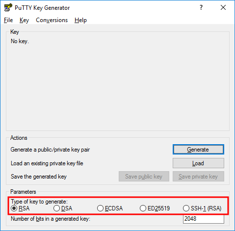

Note
While AWS Portal can enable cloud rendering in Deadline 10, AWS Deadline Cloud is a newer offering that has been built specifically for the cloud. It is a fully managed service that does not require installation or maintenance of infrastructure (e.g., repository, database, or license server). Worker fleet auto-scaling, asset synching, and licensing are all managed natively within AWS by Deadline Cloud. See here for more information on Deadline Cloud and its capabilities.
Connecting to a Linux AWS Portal Worker From a Windows Machine¶
If you are connecting to the Gateway instance from a Windows machine use the following steps.
Install PuTTY
Download and install PuTTY from the PuTTY download page. If you already have an older version of PuTTY installed, we recommend that you download the latest version. Be sure to install the entire suite.
Converting Your Private Key Using PuTTYgen
AWS Portal Link creates the DashKey in a private key format (.pem) which PuTTY does not natively support. PuTTY has a tool named PuTTYgen, which can convert keys to the required PuTTY format (.ppk). You must convert your private key into this format (.ppk) before attempting to connect to the Gateway instance using PuTTY.
To convert the DashKey
Start PuTTYgen as Administrator (for example, from the Start menu, choose All Programs > PuTTY > PuTTYgen, Right Click > Run as administrator).
Under Type of key to generate, choose RSA.
If you’re using an older version of PuTTYgen, choose SSH-2 RSA.
Choose Load. By default, PuTTYgen displays only files with the extension .ppk. To locate your .pem file, select the option to display files of all types. Then navigate to the directory with the DashKey that you found earlier.
Select the DashKey file, and then choose Open. Choose OK to dismiss the confirmation dialog box.
Choose Save private key to save the key in the format that PuTTY can use. PuTTYgen displays a warning about saving the key without a passphrase. Choose Yes.
Specify the DashKey. PuTTY automatically adds the .ppk file extension.
The DashKey is now in the correct format for use with PuTTY. You can now connect to your Gateway instance using PuTTY’s SSH client.
Setting up Pageant
As part of the PuTTY install you will have also received Pageant, a place where you can store your keys and forward them when using SSH with PuTTY.
Start Pageant (for example, from the Start menu, choose All Programs > PuTTY > Pageant).
If Pageant is already running you may receive and error saying that Pageant is already running, this is fine.
Add the DashKey.ppk file to Pageant
Open the system tray
Right Click the Pageant icon
Select Add Key
Navigate to the folder where you stored the DashKey.ppk file.
Select DashKey.ppk and click Open
Starting a PuTTY Session
Use the following procedure to connect to the Gateway instance using PuTTY. You need the DashKey.ppk file that you created earlier for the DashKey.
To start a PuTTY session
Start PuTTY as Administrator (from the Start menu, choose All Programs > PuTTY > PuTTY, Right Click > Run as administrator).
In the Category pane, choose Session and complete the following fields:
In the Host Name box, enter ec2-user@public_dns_name_or_ipv4_address.
Under Connection type, select SSH.
Ensure that Port is 22.
(Optional) You can configure PuTTY to automatically send ‘keepalive’ data at regular intervals to keep the session active. This is useful to avoid disconnecting from your instance due to session inactivity. In the Category pane, choose Connection, and then enter the required interval in the Seconds between keepalives field. For example, if your session disconnects after 10 minutes of inactivity, enter 180 to configure PuTTY to send keepalive data every 3 minutes.
In the Category pane, expand Connection, expand SSH, and then choose Auth. Complete the following:
Choose Browse.
Select the DashKey.ppk file that you generated earlier, and then choose Open.
Select the Allow agent forwarding check box.
(Optional) If you plan to start this session again later, you can save the session information for future use. Choose Session in the Category tree, enter a name for the session in Saved Sessions, and then choose Save.
Choose Open to start the PuTTY session.
If this is the first time you have connected to this instance, PuTTY displays a security alert dialog box that asks whether you trust the host you are connecting to.
Choose Yes. A window opens and you are connected to your Gateway instance.
Connecting to the Worker
Once you have logged into the Gateway instace you can now log into your AWS Portal Worker instances.
Use the ssh command to connect to the instance. You specify ec2-user@private_ipv4_address. For example:
ssh ec2-user@10.128.31.167
You will see the following response.
The authenticity of host '10.128.31.167 (10.128.31.167)' can't be established. ECDSA key fingerprint is SHA256:AaBbCcDdEeFfGgHhIiJjKkLlMmNnOoPpQqRrSsT0123. ECDSA key fingerprint is MD5:00:00:00:00:00:00:00:00:00:00:00:00:00:00:00:00. Are you sure you want to continue connecting (yes/no)?
Enter yes.
You will see the following response.Warning: Permanently added '10.128.31.167' (RSA) to the list of known hosts.
You are now connected to your AWS Portal Worker instance.